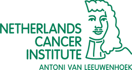
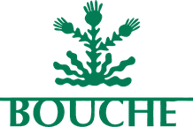

Software
An open-source Nextflow pipeline that takes deep mutational scanning experiments from raw sequencing reads to variant fitness and plots. Maximilian Stammnitz and I are its original authors; it is now part of nf-core.
Application for the EMBL International PhD Programme
Get to know my name on the protein level: hover over or tap the map to swap amino acids.
My surname, read as a protein: every possible single substitution, drawn the way deep mutational scans are. Instead of measured fitness, the shading is the BLOSUM62 score. Amber swaps turn up in related proteins more often than chance, blue ones less often.
My full name as a peptide, folded by Chai-1. B and J aren't amino acids, so Chai-1 read them as unknown residues and built only a short stub for each. Drag to turn it.
The map and the model need a bit more room.
It keeps fascinating me how swapping a single amino acid in a protein can lead to a completely different biological outcome. I am Benni, a master's student in Molecular Biotechnology, and I am interested in research that investigates large-scale associations between genotype and phenotype.
My excitement for these types of screens started in 2024 while working with Maximilian Stammnitz in Ben Lehner's lab at the CRG in Barcelona. There, we used deep mutational scanning to test the effect of every possible point mutation in several proteins. I find this approach particularly compelling because it opens up a vast search space to discover functional elements that nature has never shown us.
I am applying to the EMBL International PhD Programme because it provides the ideal environment to dedicate myself to a specific research focus over multiple years without losing sight of the bigger picture. The broad scientific scope of EMBL is outstanding, and I am equally excited about exploring projects that extend beyond my current focus. To provide more context about my background, this portfolio contains my CV and previous outputs of my work. Thanks for reading!
Aug 2026 – nowAmsterdam

Master's thesis, Natalie Scholes' lab
Rewiring transcription factors by induced proximity
Proof of concept using a novel synthetic BCL6 system, to hopefully turn it into a platform that finds high-potential transcription factor targets for drugs.
Sep 2025 – Jun 2026Heidelberg
Organizing committee
Germany's largest student-organized congress, with about 1,000 guests. I helped curate the speakers, among them Anne Brorhilker, formerly the lead prosecutor in Germany's Cum-Ex tax scandal.
Apr – Jul 2025Heidelberg
Internship, Lars Steinmetz's lab, supervised by Kai Fenzl
Analysis of deep mutational scanning readouts for RBM20 (stability, splicing and localization) and protein stability predictions with RaSP. The project is part of a recent preprint, which I co-authored.
Sep 2024 – Jan 2025Barcelona
Internship, Ben Lehner's lab, supervised by Maximilian Stammnitz
Together with my supervisor, Maximilian Stammnitz, I built nf-core/deepmutscan, an open-source Nextflow pipeline for deep mutational scanning data. At the bench: large site-saturation mutagenesis library generation by nicking mutagenesis for multiple proteins and high-throughput competition experiments with >10,000 mutants.
Mar – Jul 2024Heidelberg
Bachelor's thesis, Benedikt Brors' lab, supervised by Niklas Beumer
Comparative single-cell RNA sequencing analysis of circulating tumor cells across cancer entities
Characterizing distinct populations of circulating tumor cells (CTCs) in a large scRNA-seq data set.
Jan – Nov 2023Heidelberg
ReMixHD, dry lab and sustainability
Two engineered Pseudomonas fluorescens strains in co-culture: one breaks down mixed plastics, the other turns the breakdown products into a useful recombinant product. Third place overall among more than 400 teams.
Software
An open-source Nextflow pipeline that takes deep mutational scanning experiments from raw sequencing reads to variant fitness and plots. Maximilian Stammnitz and I are its original authors; it is now part of nf-core.
Preprint, 2026
A pooled screen of about 4,300 RBM20 substitutions, read out for localization and splicing in human cells.
Posters, 2025 and 2026
Posters in Barcelona (2025) and Melbourne (2026). The 2026 poster: nf-core/deepmutscan: a community-oriented, modular bioinformatics pipeline for deep mutational scanning by shotgun sequencing.
2024 – nowHeidelberg
MSc Molecular Biotechnology
Computational workflow development with Nextflow and nf-core, data science in R, and Bash on HPC. Minor in biomolecular modeling.
2020 – 2024Heidelberg
BSc Molecular Biotechnology
Cell biology and molecular mechanisms, and bioinformatic processing of biological data with R.
2020Krefeld
Abitur
Special prize for environmental technology at Jugend forscht, Germany's science competition for students.
I photograph on film and print in the darkroom. What fascinates me is how the picture I take and the work under the safelight afterwards come together as one image. Darkroom club @ EMBL? Count me in!
Selected image series from 2020.
Fermenting tea leaves a lot of room to steer the taste: the tea, the sugar, time, temperature, and whatever flavors go into the second fermentation. Adjusting all those parameters until the kombucha is tailored to my own taste is a lot of fun.
In 2023 I joined Bouche for three months as a production assistant in their Berlin-based brewery. Back then it was five people, most of them artists, and it was a very creative place to work. I helped brew tens of thousands of liters, and together we kept experimenting with new flavors.

I enjoy designing and building websites and recently started a little side project together with a friend: project-celeste.de
When I'm not in the lab or out with friends, you often find me running or on the bike.